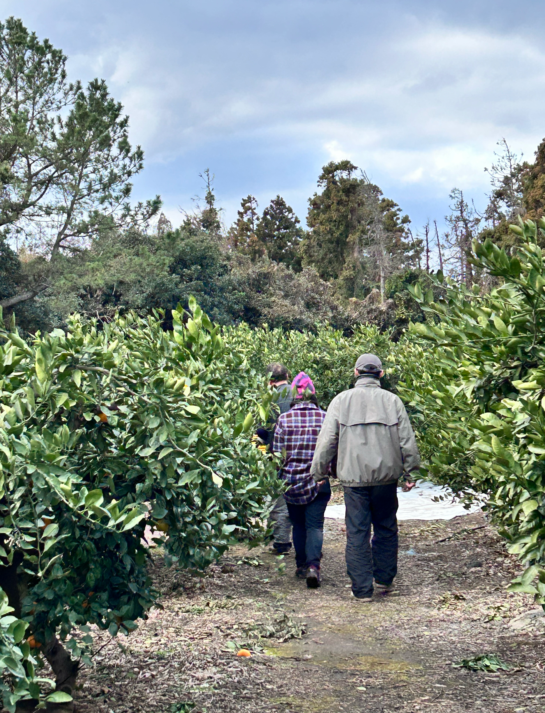
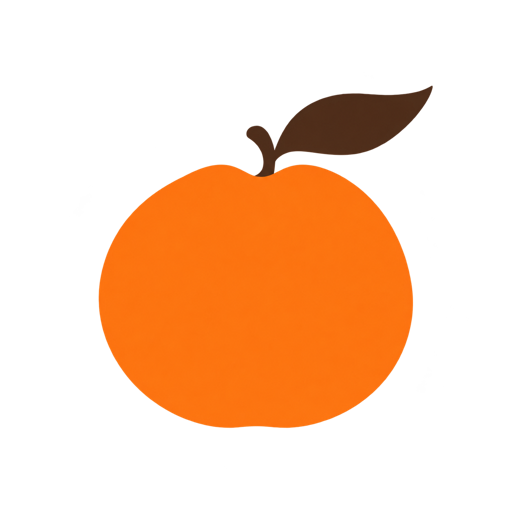
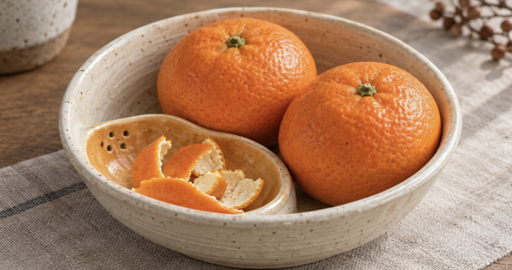

천천히 껍질을 벗기고
04
FROM OUR FARM
JEJU · PYOSUN
제주 표선,
2대째 같은 손으로.
직접 재배하고 함께 수확합니다. 익은 빛과 향, 단단한 과육을 살펴 한 상자에 담을 감귤을 고릅니다.

- 2대째
- 이어온 제주 표선 농장
- 11—01
- 11월부터 1월까지 수확
- HAND
- 하나하나 살펴 직접 선별

PEELGUL 구성 보기JEJU MANDARIN RITUAL 01
제주 표선 감귤과 Peel Bowl이 만드는
하루에 더하는 산뜻한 쉼표.

A SMALL PAUSE
바쁜 오후에 필요한 것
껍질을 벗기는 손끝의 움직임, 순간적으로 퍼지는 시트러스 향, 입안을 깨우는 산뜻한 한 조각. 몇 분이면 익숙한 하루의 결이 달라집니다.
천천히 껍질을 벗기고
선명한 향으로 환기하고
산뜻한 한 조각으로 돌아옵니다
THE DIFFERENCE
WHY PEELGUL
단순히 달기만 한 귤보다 향과 산미, 단맛의 균형이 살아 있는 감귤을 고릅니다.
껍질을 까는 순간 느껴지는 선명한 시트러스 향
산미와 단맛이 자연스럽게 어우러지는 산뜻한 균형
손으로 바로 까서 즐기는 짧고 가벼운 Fresh Break

FROM OUR FARM
JEJU · PYOSUN
직접 재배하고 함께 수확합니다. 익은 빛과 향, 단단한 과육을 살펴 한 상자에 담을 감귤을 고릅니다.

SIGNATURE GIFT SET
PEELGUL
Fresh Break Gift Set
감귤은 자연산물이므로 크기와 색, 껍질 표면이 조금씩 다를 수 있습니다. 직사광선을 피해 서늘한 곳에 보관하고 수령 후 가급적 빠르게 드세요.
REFILL & REPEAT
첫 세트 이후에는 감귤만 편하게 리필하세요.
제주 표선 감귤 10kg배송비 포함
19,800원제주 표선 감귤 20kg배송비 포함
38,800원

구매 페이지를 준비하고 있어요.
곧 PEELGUL의 Fresh Break를 만나보실 수 있습니다.